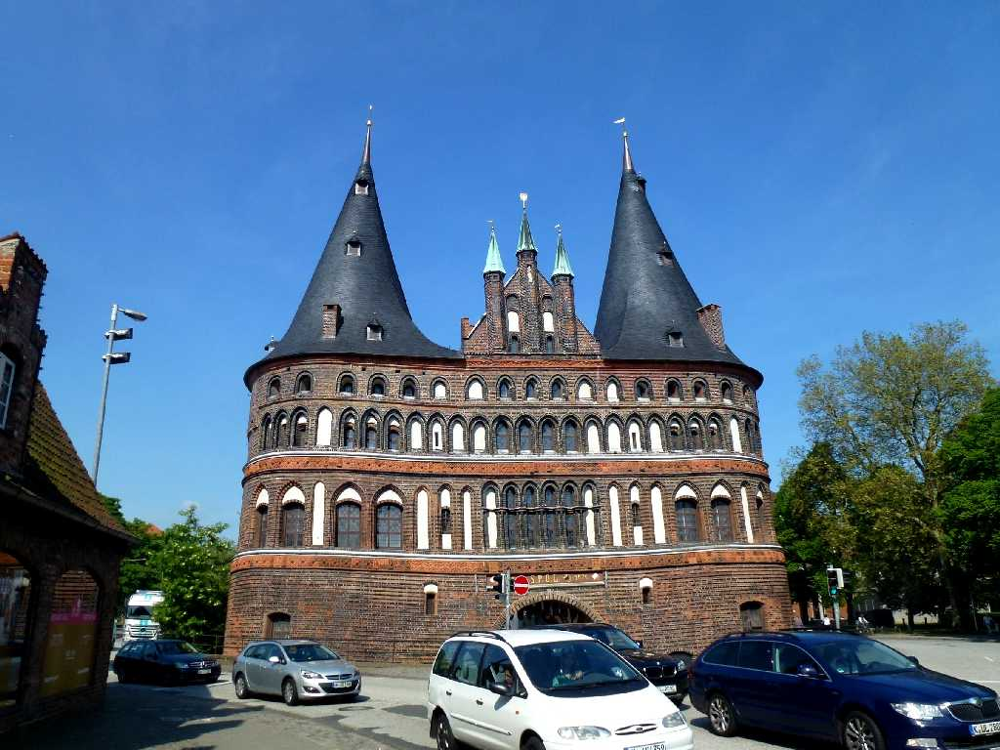
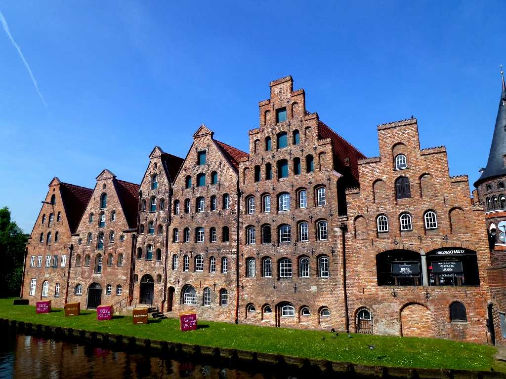
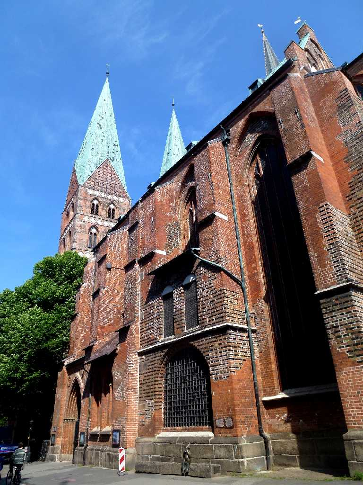

Holstentor Lübeck
１４７７年に創られたハンザ都市リューベックの出入口ホルステン門は旧ドイツマルク紙幣の絵柄になっていた

Salzspeicher
ニシン貿易で栄えた１５７９年に造られた煉瓦造塩貯蔵庫でニシンの塩漬けに利用された

Marienkirche
１２５０年頃から創られたゴシック様式の聖マリエン教会は塔１２５ｍ天井高８３ｍドイツ最大の煉瓦教会で北ドイツ周辺の７０余りの教会の手本となった 青年時代のバッハはこの教会オルガニストであった 教会建設の伝説による悪魔像がかわいい
May 26 2014 Buddenbrooks Thomas Mann
リューベック出身のトーマスマンの長編小説プッデンブローク家の人々の舞台となった家 兄のハインリッヒマンとよく訪れていた祖父母の家
ドイツ周遊５,０００ｋｍバスの旅は北ドイツのリューベックから始まる